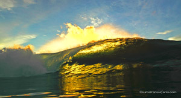

|
| |
| |
|
Um bom dia a todos do Sumatran Surfariis! Nós estamos agora bem no coração da nossa 14a. temporada, e temos tido fantásticas aventuras como sempre. Em geral tem sido um ano muito bom em matéria de surf. Não tivemos muitas ondulações gigantes, mas tem sido muito, muito, muito consistente com as ondas mais expostas às ondulações quebrando numa base de 2 metros regularmente e com muida qualidade.
Scuzz também relata que, assim como nos últimos anos, a quantidade de barcos era baixa até o final de Junho, e mesmo que as tradicionais galeras de verão tenham começado a chegar, ainda estamos tendo várias sessões sozinhos ou com apenas alguns outros caras. Nossos guias tiveram algum tempo para realmente explorar o Norte de Sumatra, e eles sentem que os recifes certamente afundaram um pouco. Nada tão grande como algumas pessoas esperavam inicialmente, mas Scuzz sente que há uma melhora geral no surf, com algumas ondas ficando significativamente melhor. Para uma atualização mais completa, dê uma olhada na nossa newsletter atual. Se você não assina e quer passar a recebê-la, preencha o formulário ou mande uma mensagem pra gente que nós asseguramos que você receba da próxima vez.
Nós estamos virando a esquina naquela época que a gente realmente gosta, e ainda temos alguma disponibilidade para reservas em viagens que ainda tem boas ondas com menos surfistas na água. Desta forma, assegure-se de dar uma olhada na nossa agenda e contate-nos se tiver quaisquer dúvidas.
E agora à introdução da nossa empresa……
|
Seja bem vindo ao SumatranSurfariis.com.br, website de uma das mais antigas e mais bem sucedidas operadoras de turismo das ilhas ao Oeste e Norte de Sumatra. Por mais de 12 anos nós temos levado surfistas a experenciar as aventuras de suas vidas, e isto tem sido feito totalmente sem o uso de agentes de turismo externos. Isto nos permite ter um controle máximo sobre as viagens que nós entregamos e das promessas que fazemos, assim como economizar o dinheiro perdido nestes agentes para os nossos hóspedes. Nós estamos confiantes que centavo por centavo nós entregamos as melhores excursões de surf no planeta pelo melhor preço, e nós esperamos que você venha se juntar a nós.
Nós somos os únicos operadores de três barcos: Southern Cross, Budyadahri e Mohogny, além de parcerios no Jiwa. Todos nossos barcos são construídos no estilo Indonésio tradicional, o que acrescente à originalidade da sua aventura. Mas eles também são grandes, espaçosos, e bem equipados com todos os confortos modernos. Você estará muito confortável e muito bem cuidado por nossa tripulação. As tripulações em nossos barcos tem muitos anos de experiência realizando viagens nestas águas, e sabem como organizar um viagem super pra você.
Porquê você deve decidir pelo Sumatran Surfariis ao invés de outras operadoras com barcos poderosos e propagandas em revistas e websites ao redor do mundo? Acima de tudo, pela nossa experiência. Você não pode comprar experiência com uma TV de tela plana, sorvete importado, ou como é muito comum, a propaganda enganosa de um barco que atinge velocidades de até de 20 nós. Experiência de mais de uma década surfando e observando as ondas mais que os outros, sabendo o que acontece durante todo o ciclo das marés em certas ondas, saber onde a maioria dos barcos irá quando uma certa previsão aparece no computador e ir a outro lugar sem mais ninguém. Experiêcia é compreender que mesmo que a previsão diga que o vento vai ser uma direção, as nuvens no céu estão dizendo outra coisa, e indo um pouco mais longe para chegar ao lugar certo ao nascer do dia. E experiência é saber que a maioria das pessoas prefere um surf sem mais ninguém em uma onda menos conhecida, ao invés de competir com 25 outras pessoas em uma onda de revista. Após literalmente centenas de viagens, nós obviamente temos nossas idéias sobre o que faz as melhores viagens, mas nós ainda buscamos reações e opiniões suas durantes as viagens e chegamos a decisões em grupo sobre os melhores lugares para surfar todos os dias.
Nossos barcos fazem expedições a duas áreas principais: as Mentawais e o Norte de Sumatra. Sinta-se à vontade para dar uma olhada na nossa pagina de viagens e descobrir um pouco mais sobre o que diferencia entre estas duas áreas bem diferentes mas igualmente fantásticas. A página também te dá um bom exemplo do que uma viagem vai ser do começo ao fim. Recentemente nós iniciamos também a exploração de áreas ao Sul de Sumatra, e apesar de não fazermos nenhuma divulgação por agora, pode se dizer que há mais por lá do que se pensa. Ainda há muitos picos secretos a serem descobertos, e nós nunca descansamos nossa láurea e continuamos a puxar os limites de novas descobertas cada vez mais. Muitas das nossas expedições são reservadas com mais de um ano de antecedência, então dê uma olhada na agenda e certifique-se de encontrar a época perfeita para a viagem dos seus sonhos.
|
|
|
| |

|
Em Abril de 2006, nós expandimos nossos serviços com a abertura do Aloita Resort & Spa. Localizado em uma bonita ilha ao norte de Tua Pejat, acerca de Telescopes, o Aloita é muito mais do que o seu surf camp tradicional, e oferece várias opções não disponíveis em qualquer dos outros resorts de Sumatra. O resort se encaixa perfeitamente para casais, visto que cada um dos espaçosos bangalôs com ar-condicionado te dão acesso ao seu próprio kilômetro de praia particular. O Centro de Mergulho conta com toda uma extensão de equipamentos de mergulho bem conservados e de alta qualidade, você pode até mesmo tirar sua certificação se ficar por lá tempo suficiente. Ou, se você só quer relaxar, pode se cuidar com um dos tratamentos de nosso spa ou apenas relaxar com um drink sobre as águas no A-Bar. Mas, é claro, o surf é sempre o nosso negócio principal, e o Aloita está muito bem equipado para te cobrir nesta área. Além das quase uma dezena de ondas na região nós podemos ir tão longe ao Sul quanto à região de Lances e ao Norte para a região de Playgrounds, cobrindo aproximadamente 70% das ondas nesta região. O Aloita se sobressai por sua qualidade, luxo, e sua variedade de comodidades, sendo de longe o mais valorizado entre qualquer dos resorts das Mentawais.
Por mais de 10 anos nós organizamos nossas operações a partir do lendário Hotel Batang Arau, que se localiza bem ao lado da Marina do Rio Muara. Esta era a nossa casa e quartel general, e o barzinho de nossos capitães, figuras importantes, e os surfistas viajantes mais do que qualquer lugar em Padang. Incontáveis estórias foram comtadas e experiências foram compartilhadas no B.A., tornando-o um dos mais conhecidos e mais respeitados negócios da região. Junho de 2009 trouxe o fim de uma era quando o Sumatran Surfariis se mudou do Batang Arau para um escritório não muito longe dali. Agora que nós não temos que concentrar parte dos nossos esforços para a acomodação e entretenimento de nossos clientes, podemos dedicar todos nossos esforços à tarefa de entregar aos nossos hóspedes as melhores expedições de barco em Sumatra. É claro, nós ainda temos cervejas, aperitivos e um lugar confortável para nossos hóspedes relaxarem antes de suas viagens. |
Todos nós amamos Sumatra e esta é a nossa casa. Nós não somos apenas novos guias em busca de todas as ondas para nós mesmos - nós somos SURFISTAS com muita experiência fazendo as viagens mais espetaculares ao mesmo tempo em que mantemos nosso respeito por todos que cruzamos pelo caminho. Aki e Scuzz no Mohogny tem mais de 25 anos de experiência nestas ilhas de Sumatra entre eles. Yu e Davi no Southern Cross tem 13 anos de experiência entre eles nestas ilhas. Bevo e Josh no Budyadahri tem 8 anos de experiência entre eles nestas ilhas, mais todo o conhecimento que os outros 4 caras passaram a eles nas viagens que fizeram juntos em todos estes anos. Todos nossos guias foram treinados por um cirurgião, e eles sabem como cuidar de você em caso de você se divertir "demais". Cada uma de nossas viagens tem um fotógrafo experiente e profissional, assim como nossas duas massagistas Keiko e Miwa que se revezam entre os barcos para trazer uma massagem relaxante à noite, e servir os jantares com hachis e um sorriso. Por trás das cortinas nós temos Christina que foi presidente do Batang Arau por 10 anos, a fundadora de nossa PMA Indonésia Bevys Sumatra, e o corpo e a alma da parte dos negócios. E é claro que organizando tudo está Slayer, que tem viajado conosco desde 2000 e fazendo nossas reservas desde 2002. Ele virtualmente nunca deixa seu computador, e pode responder a qualquer pergunta sobre uma viagem nesta área que você pode imaginar.
Esta é A família da comunidade do surf de Sumatra. Nós estamos orgulhosos de dizer que nós damos trabalho a uma tripulação totalmente indonésia de mais de 30 pessoas. A maior parte de nosso pessoal vive em Padang o ano todo, e nós estamos aqui para ver tudo, para fortificar nossas relações comerciais, gerenciar nossos contatos e inventório, e fazer todo o necessário para melhorar constatemente as suas expedições em nossos barcos. Nós também nos preocupamos profundamente com a cultura local e buscamos constantemente formas de oferecer suporte a comunidade que de forma tão desapegada nos deu tanto. Nós fomos a primeira agencia de turismo a oferecer assistência humanitária aos terremotos e tsunamis devastadores (você pode ler sobre todos nossos esforços começando por aqui - em inglês), e nós "adotamos" a ilha de Bawa, onde nossa nova horta sustentável começa a crescer.
O Sumatran Surfariis sempre viveu e cresceu por boca a boca, e apenas se nós entregarmos excelentes viagens é que nós vamos sobreviver no futuro. Por favor, sinta-se a vontade para ler o que alguns de nossos clientes no passado disseram sobre nós na nossa página de Depoimentos. Dê uma olhada também na nossa página de fotos das últimas viagens, assim como nossa newsletter para ter uma idéia melhor do que nós somos. Nós esperamos compartilhar esta experiência maravilhosa com você. Sinta-se a vontade para entrar em contato para qualquer informação.
Aproveite o dia, você não vai se arrepender. Terima Kasih!
|

|
|
| |
©
2010 sumatransurfariis.com.br. Todos os direitos reservados.
Endereço: Jalan Hayam Wuruk 29, Padang
25118 - West Sumatra, Indonesia
|